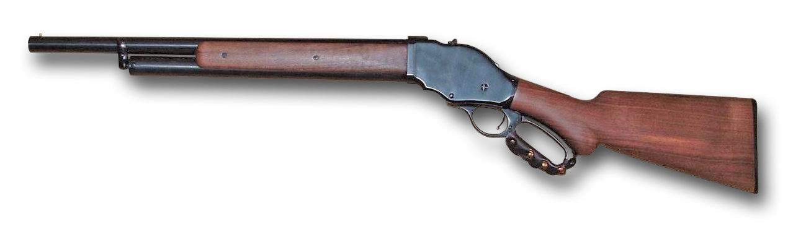

M1887槓桿式霰彈槍

溫徹斯特M1887（英語：Winchester Model (M) 1887）是一款由著名的美國槍械設計師約翰·白朗寧設計、美國溫徹斯特連發武器公司生產的槓桿式散彈槍，發射12鉛徑散彈。
- 溫徹斯特M1887是第一款真正成功的槓桿式散彈槍，同時也是最早期的連發式散彈槍之一。其採用的槓桿式槍機是溫徹斯特連發武器公司最著名的招牌設計，該公司所生產的溫徹斯特M1873步槍就是槓桿式操作槍械的典型例子。M1887的設計師約翰·白朗寧曾建議採用泵動式操作原理，並認為泵動式比起槓桿式更加適合作為連發式散彈槍的操作機制，但溫徹斯特是一間以「槓桿式槍械」而聞名的公司，其生產的槍械都是以槓桿式原理操作，故認為他們的新型散彈槍也必須以品牌知名度作為理由而設計成槓桿式操作。白朗寧其後就設計了一枝後裝式，並同時採用滾動式閉鎖和槓桿式原理運作的散彈槍。由於在1887年推出，該槍被命名為「1887型」（Model 1887）。不過，基於M1887本身並不太可靠，尤其在供彈時容易出現卡殼等故障，溫徹斯特後來委託白朗寧設計出使用泵動式設計的溫徹斯特M1893散彈槍（為溫徹斯特M1897的早期型號），但在推出後不久世界就迎來了無煙火藥時代。
在19世紀中後期推出的散彈槍仍然發射使用黑火藥作為推進劑的散彈藥筒，故溫徹斯特M1887也同樣只能發射使用黑火藥的12鉛徑散彈，不久亦提供了發射10鉛徑散彈的版本。後來，溫徹斯特公司很快就意識到，溫徹斯特M1887的槍管強度並不足以承受無煙火藥型散彈藥筒的膛壓。為此，他們委託白朗寧重新設計出適應無煙火藥的1887型，得出來的結果就是溫徹斯特M1901，不過該槍只能發射使用無煙火藥的10鉛徑散彈，並沒有提供無煙火藥版12鉛徑型。原因是溫徹斯特不想威脅到M1897泵動式散彈槍的銷量。於是M1901和M1897同時一度成為了溫徹斯特公司最暢銷的散彈槍。
M1887的標準型配備30英吋槍管，另有可特別訂製的32英吋槍管以及20英吋槍管型。溫徹斯特還提供大馬士革鋼槍管的版本。
雖然M1887和M1901在技術上仍是十分優秀的設計，但是本身槓桿式槍機並不如泵動式槍機般適合用於散彈槍，加上在溫徹斯特M1897和其他當代的泵動式散彈槍推出以後，市場對於槓桿式操作散彈槍的興趣已經大大減少，這個結果是約翰·白朗寧當初已經預料到的。溫徹斯特M1887在1887—1901年間的產量達到64,855枝。